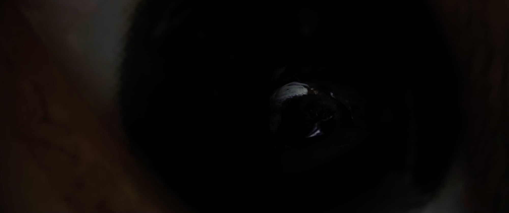
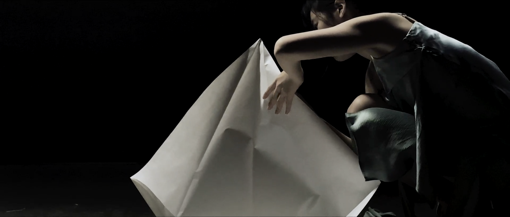
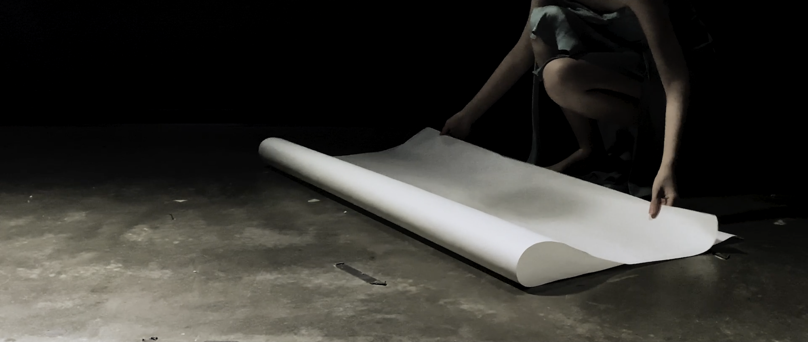
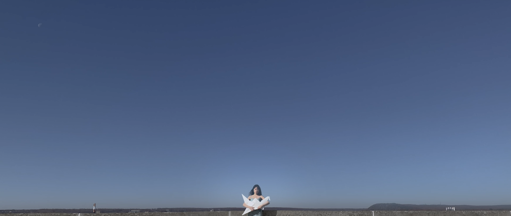
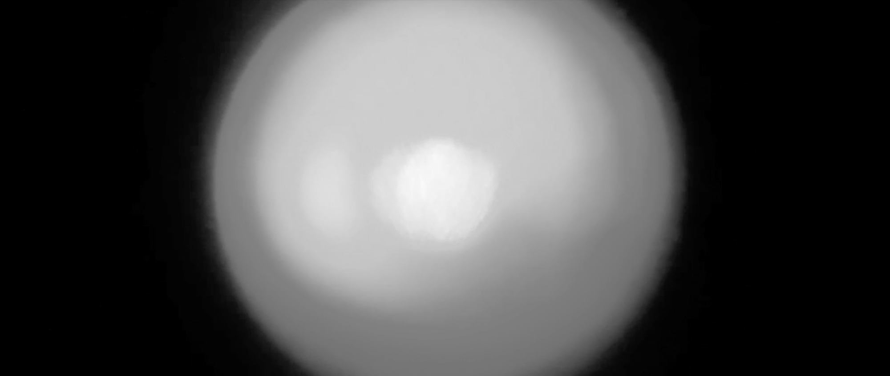

I sometimes miss my younger self, who would cry over a dead little bird
out of sympathy. That part of me has been removed together with my
wisdom tooth. Growing up feels like licking the hole where the tooth has
been removed. It doesn’t hurt anymore, but I feel the void.